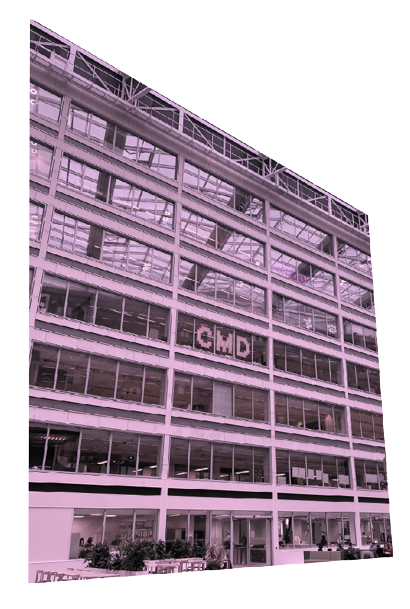

About
Studying abroad? Or simply new in Amsterdam and not very familiar with the city or the people yet? No worries! With the help of the Art Walk & Talk project, you'll feel at home in no time. Because you will not only see the best street art projects around Amsterdam, you'll also be able to meet new people and make new friends!
My name is Suzanne. I'm 19 years old and a CMD student at the Hogeschool in Amsterdam. Due to a schoolassignment about international students, I created this project to help expats feel more familiar with the city. In particular expats who love (street) art, but don't know where to start looking.
Another important but hard aspect for internationals coming to Amsterdam, is making social connections. So, I wanted to combine the two together. Art as well as socials. That's how I ended up with this concept where you can walk routes along a variety of street art points together with a group of new people who you can get to know along the way. Maybe it'll grow out to awesome friendships, who knows.
One thing is for sure, it's most definitely a step on your way to making Amsterdam your own.
 View our routes